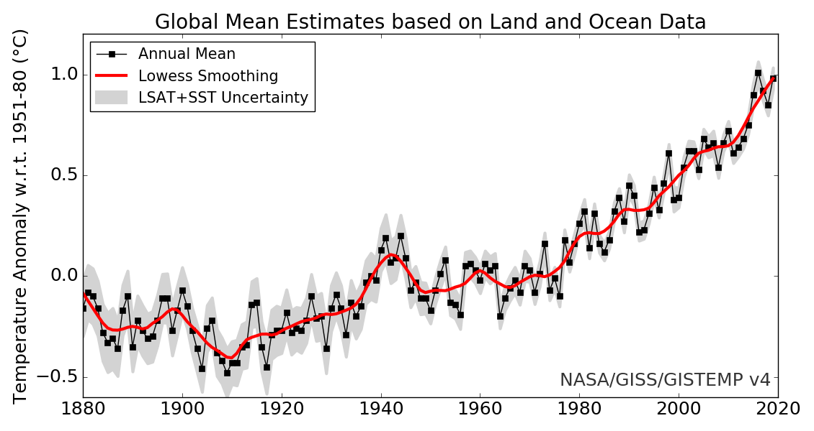
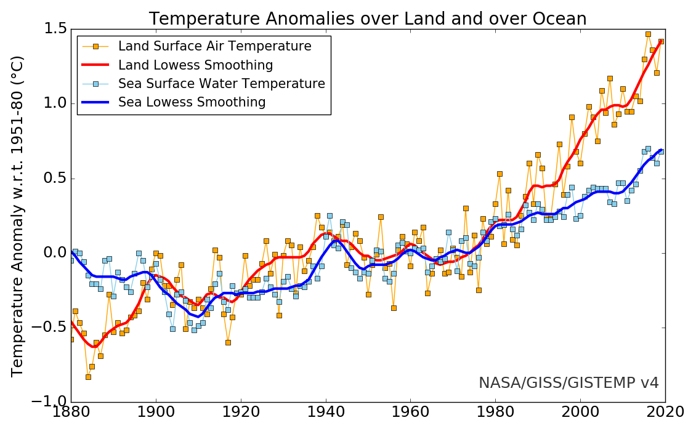
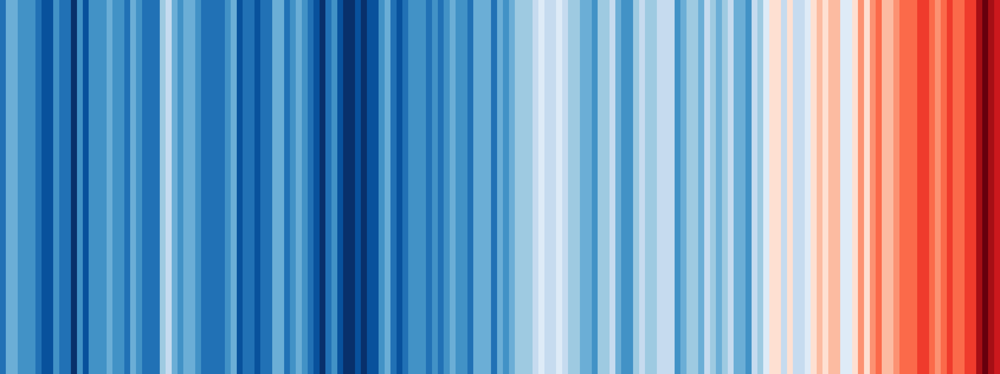
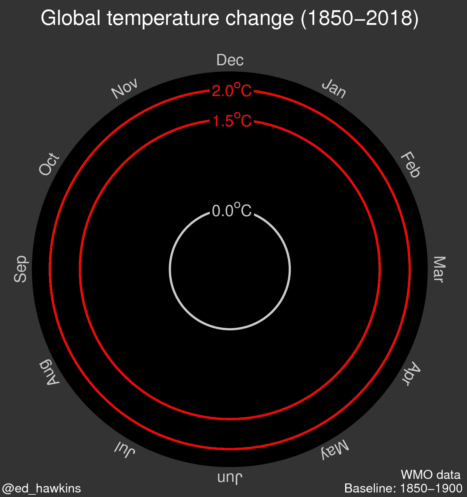
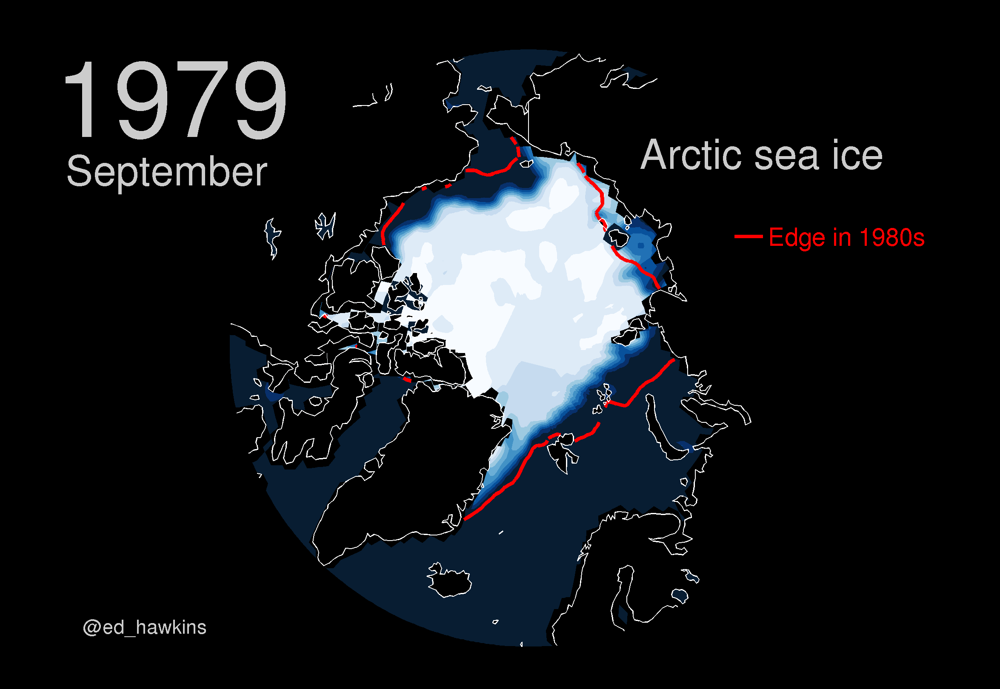
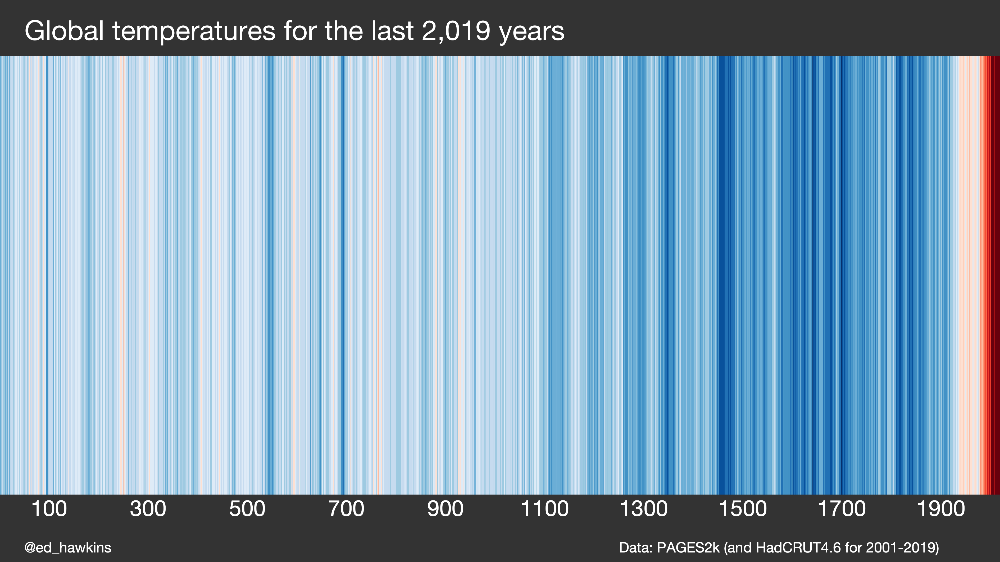
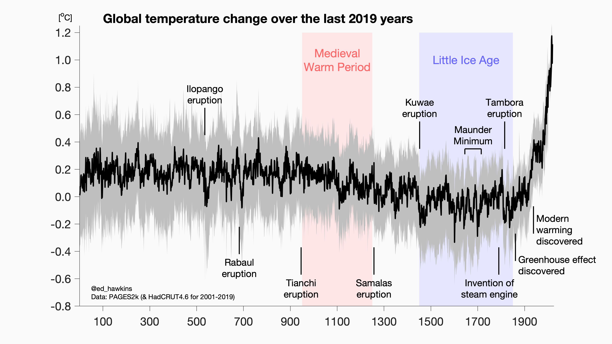

Allgemeines zur Datenvisualisierung¶
“In school we learn a lot about language and math. On the language side we learn how to put words together into sentences and stories. With math, we learn to make sense of numbers. But it’s rare that these two sides are paired. No one tells us how to tell stories with numbers … this leaves us poorly prepared for an important task that is increasingly in demand.” – Cole Nussbaumer Knaflic
In diesem Kurs geht es darum Daten (z.B. aus Experiment/Simulation/Berechnung) zu visualisieren. Die Visualisierung dient dabei immer dem Zweck eine bestimmte Frage zu beantworten. Diese könnte zum Beispiel sein:
Wie groß ist die jährliche Veränderung der Temperatur der erdnahen Atmosphäre und der Meere seit Beginn der Industrialisierung?

[von NASA] Land-ocean temperature index, 1880 to present, with base period 1951-1980. The solid black line is the global annual mean and the solid red line is the five-year lowess smooth. The gray shading represents the total (LSAT and SST) annual uncertainty at a 95% confidence interval and is available for download. [More information on the updated uncertainty model can be found here: Lenssen et al. (2019).]
LSAT = Land Surface Air Temperature SST = Sea Surface Temperature
Eine gute Datenvisualisierung muss zusammen mit der Bildunterschrift folgende Kriterien erfüllen:
✅ lesbar / erkennbar
Schriftgröße ausreichend groß und Schriftart lesbar
Farben und Kontrast hinsichtlich Unterscheidung von Kategorien und Lesbarkeit für Farbblinde geeignet
Linientypen und Liniendicke hinsichtlich Unterscheidung von Kategorien und Lesbarkeit geeignet
ggf. wichtige Daten als Text in die Abbildung einbringen
✅ verständlich
Achsenbeschriftung mit Einheiten vorhanden und eindeutig
Verwendung von Legenden und/oder zusätzlichem Textelementen um Daten eindeutig zu kennzeichnen
Aussage der Datenvisualisierung muss zusammen mit Bildunterschrift und Titel (wenn vorhanden) ohne zusätzlichen Kontext ersichtlich sein
✅ übersichtlich
Wenn nicht zwingend notwendig, nicht zu viele Variationen in eine Datenvisualisierung, ggf. lieber mehrere Abbildungen erstellen
Nehmen wir nun erneut NASA Daten diesmal mit der Unterscheidung nach Land und Ozean und prüfen nach unseren Kriterien:

[von NASA] Annual (thin lines) and five-year lowess smooth (thick lines) for the temperature anomalies (vs. 1951-1980) averaged over the Earth’s land area and sea surface temperature anomalies (vs. 1951-1980) averaged over the part of the ocean that is free of ice at all times (open ocean).
Anmerkungen:
👍 Temperaturen der Ozeane mit blauer Farbe macht die Unterscheidung intuitiv einfach
👍 Auf der Webseite können Datenpunkte interaktiv abgelesen werden
👍 Datenpunkte zu jedem Jahr mit niedrigerer Farbintensität und Linienstärke im Vergleich zum 5-Jahres-Mittelwert, da Mittelwert die bessere Aussagekraft hat und dies somit besser hervorsteht
👍 Im Vergleich zur oberen Abbildung wurde auf das Konfidenzintervall verzichtet, weil dies die Grafik ggf. sehr unübersichtlich gemacht hätte
Eine der simpelsten und gleichzeitig effektivsten Formen der Datenvisualisierung hat der Klimatologe Ed Hawkins mit den sogenannten Warming Stripes (Klimastreifen) aufgezeigt**.** Er wollte den rapiden Temperaturanstieg der letzten Jahre veranschaulichen und hat die oben gezeigten Daten Farbcodiert.

[Ed Hawkins] Warming stripes for 1850-2018 using the WMO annual global temperature dataset.
Neben der eher unwissenschaftlichen Darstellung mit den Climate Stripes hat Hawkins auch weitere Darstellungen erzeugt, die definitiv ein Beispiel für eine sehr gelungene Datenvisualisierung sind:

[Ed Hawkins] Climate spiral for the WMO global temperature dataset.

[Ed Hawkins] Arctic sea ice concentration from NSIDC for Septembers during 1979-2018.
Hawkins hat seine Klimastreifen mit Daten des PAGES2k Team bis auf das Jahr 0 erweitert, was die Aussage meiner Meinung nach sogar noch besser darstellt.

[Ed Hawkins] Klimastreifen mit Daten der letzten 2019 Jahre
Jedoch ist die Datenbasis der Jahre vor 1850 mit großen Unsicherheiten behaftet, was durch Konfidenzintervalle deutlich wird:

[Ed Hawkins] Erderwärmung der letzten 2019 Jahre
In dem letzten Bild wird auch gut gezeigt, wie man durch zusätzliche Farb- und Textelemente die Daten besser verstehen kann.
Für interessierte hier noch weitere Beispiele für außergewöhnliche Datenvisualisierung (auch außerhalb der wissenschaftlichen Welt):